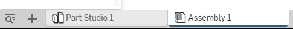

lesson-week3 << Previous Next >> lesson-week5
lesson-week4
3D Modeling - Assemblies
3D建模 - 裝配
學習要點
- 關於自由度的課程(degrees of freedom)
- 部件配合介紹(assembly Mates)
- 配對連接器(Mate Connectors)
- 使用三重軸操縱零件位置(Manipulating part position with the triad)
- 解釋配合和關係(Mates and Relations)
- 動畫配合(Animating Mates)
- 鏈接文檔簡介
- 配合應用限制
Assembly
- Assembly tab is where you define a hierarchical structure of part and subassembly instances of an Assembly.
使用“裝配”可以定義裝配的零件和裝配實例的層次結構。
- It is also where you define degrees of freedom and relations.
它也是您定義自由度和關係的地方。
- You are able to have more than one Assembly tab in a document.
您可以在文檔中擁有多個“裝配”。
- One Assembly can instance another Assembly as a subassembly, and/or instance a part directly.
一個組件可以將另一個組件實例化為子組件，或直接實例化一個部件。

lesson-week3 << Previous Next >> lesson-week5